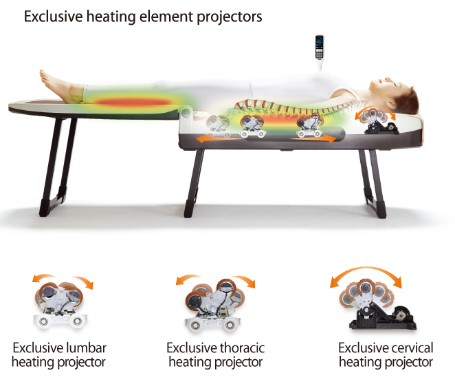

Все мы знаем что здоровье это бесценный дар. И каждый из нас хочет всю жизнь оставаться здоровым и энергичным. Но здоровье это ресурс, и если ты в него не инвестируешь, то наступит момент когда этот рерус себя исчерпает
Если тебя интересует быть всегда в ресурсе и наслаждаться своим здоровьем, предлагаем твоему вниманию оборудование Nuga Best
Так вот давай рассмотри главные преимущества при использования оборудования Nuga Best
Лежа оборудования Nuga Best мы одновременно делаем вытяжку позвоночника, улучшаем кровообращение тканей, убираем мышечный спазм, востаналиваем хрящевую ткань межпозвоночного диска
Получается, что тратя всего 40 мин в день, мы заботимся о здоровье своего позвоночника и всего организма. А здоровье это самое большое богатсво
При использовании оборудования Nuga Best, каждый может подобрать индивидуальный режим для получения максимального результата
Каждый из нас осознает на сколько важно здоровье. Оборудование Nuga Best это отличный инструмент для каждодневной заботы о своем организме